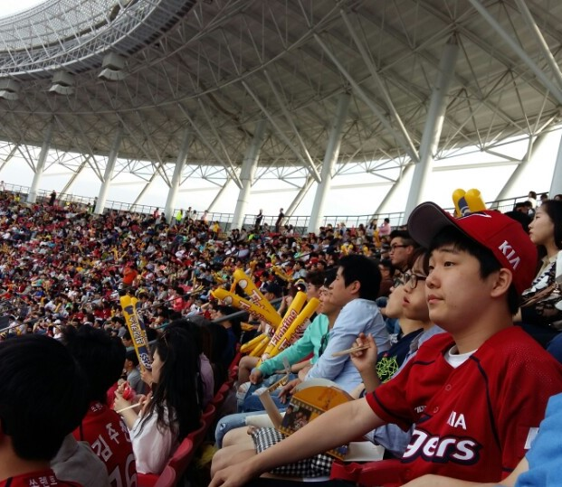

동글동글 진짜 아가였을때. 누구나 귀엽던 그 시절. (어쩌면 지금도..?) 어린이집에서 단체로 어딘가에 견학가서 찍은 사진 같은데 책상에 앉아 야무지게 쌍브이 포즈를 하고 있다. 나에게도 저렇게 조그만 아기였던 시절이 있었다니..
동글동글 진짜 아가였을때. 누구나 귀엽던 그 시절. (어쩌면 지금도..?) 어린이집에서 단체로 어딘가에 견학가서 찍은 사진 같은데 책상에 앉아 야무지게 쌍브이 포즈를 하고 있다. 나에게도 저렇게 조그만 아기였던 시절이 있었다니..

어렸을때 친척들과 벚꽃 구경하러 공원에 놀러갔을때. 옆에 있는 동생에 어깨동무를 한 채로 밀착해있는데 표정이 저렇게나 해맑은걸 보면 굉장히 신나고 즐거웠던 것 같다. 벚꽃 아래 동생과 나의 사이좋은 모습이 참 보기가 좋구만..

초등학교때 집 근처에 있는 태권도 학원 다닐때 찍은 증명사진. 저 사진을 찍은 시기와 장소, 저 순간조차 기억이 하나도 나지 않지만 국기원 홈페이지에 들어가서 발견한 사진. 이때까지만 해도 얼굴에 아기 티가 난다. 태권도는 무려 2품까지 획득했었다.

초등학교 6학년 때 학교 끝나고 친구들이랑 파리바게트에서 빙수먹을때. 악동뮤지션이 콩떡빙수라는 노래를 발매해서 파리바게트에서도 콩떡빙수를 판매했는데 친구들이랑 한 번 맛이나 보자 하고 학교가 끝나고 각자 집에 짐만 두고 파리바게트에서 만났다. 이때쯤부터 내 지금의 얼굴이 보이기 시작하는 듯. 사진의 포인트는 숟가락을 입에 물고 활짝 웃으며 굉장히 여유있어 보이는 저 모습..

중학교 친구들이랑 학교 끝나고 버거킹 갔을때.. 이떄부터 시작된 버거킹 사랑. 사진을 보아하니 버거는 다 먹고 친구들이랑 재밌는, 웃긴 이야기를 하던 와중에 사진이 찍힌 듯 하다.

중학교 2학년때 반에서 찍힌 사진. 창가 쪽 1분단 3열 기둥 옆 자리. 아마 앞 자리 친구가 카메라를 들이대서 포즈를 잡은 것 같은데 얼굴에 퍼진 무언가 바보같은 웃음이 포인트인 것 같다.

타이거즈 팬 인증샷. 사진 순서대로 광주KIA챔피언스필드, 잠실야구장 외야석, 내야석. 챔필은 가족이랑, 잠실구장은 친구랑 갔었다.

고등학교 수학여행으로 간 싱가포르 여행. 싱가포르 유니버셜 스튜디오 안 카페에서 친구랑 서로 찍어준 사진 중 하나인데 수학여행에서 찍은 사진들 중 가장 정직하게(?) 나온 듯한 사진. 개인적으로 눈코입 빼고 다 마음에 드는 사진이다.

2017년 8월 더운 여름의 금요일 밤 아빠와 서브웨이에서. 고등학교에서의 한 주가 끝나는 금요일 밤이면 학교로 아빠가 데리러 와주셨는데, 한창 아빠랑 둘이 서브웨이에 빠져있었을때 집 가는 길에 서브웨이에 들러 출출함을 달랬었다. 그때 이탈리안BMT와 쿠키를 먹으며 아빠와 찍은 셀카. 사진 속에 입고 있는 옷은 체육복인데 체육복 때문인지 학생스러운 앳된 얼굴이다.

고등학교 2학년때 프랑스어 교과 수업 교실에서. 교실 앞에 서서 친구들과 이야기 하면서 까불던 와중 친구가 아이패드로 찍었다. 까불까불거리다 신나서 웃는 모습. 교복이 예쁘다.

18번째 생일날. 친구들이 면학 시간에 공부 시간 중 짬내서 써준 롤링페이퍼와 학교를 탈출해 사다준 먹을거리들. 선물을 받아들고 기숙사 침대 위에서 기분 좋게 기념 사진을 촬영했다. 친구들아 고마워~^^

고등학교 3학년 5월에 갑자기 인생 처음으로 반삭을 해보았다. 반삭한지 얼마 안 지났을 때인데 동글동글한 모습이 신기하면서 웃기기도 하고 이 모습을 기념할 겸 도서관 가는 아빠 차 안에서 찍은 얼빡 셀카. 근데 머리가 잘 안드러나서 아쉽다. 그래도 다른 빡빡이 사진 많으니.. 졸업앨범에도 일부 반삭한 모습이다.

반삭한지 5개월 지난 시점. 그리고 동시에 수능을 한 달 앞둔 시점. 하라는 공부는 안하고 면학실에서 치명적인 척 셀카를 찍었다. 반삭한지 5개월이라 머리가 완전히 다 길지 않았는데 저 시기에 미용에 관심이 많던 친구가 항상 아침마다 고데기로 머리를 예쁘게 가꾸어주었다. 덕분에 한껏 힘준 헤어스타일.

대학 입시가 모두 끝나고 떠난 일본 가족 여행. 가족끼리 떠난 첫 해외여행인데 오사카의 오사카 성 주변에 있는 기념품 샵(?) 비스무리한 곳에 들어가서 찍은 셀카. 모자 칸에 진열되어있던 사진 속 모자를 착용하고 어떤지 한 번 본다고 셀카를 찍었다.

친한 형이랑 떠난 제주도 여행에서의 한라산 등반. 눈도 쌓여 있었고 굉장히 추운 1월이라 정상에 도착하니 머리카락과 목도리에 눈이 얼어있었다. 굉장히 신기하면서 언제 또 경험해볼 수 있을지 모르기에 소중한 경험. 굉장하거나 웅장한 무언가는 없지만 자연 그대로 위대하고 아름다운 백록담을 배경으로 정상 도착 인증 셀카.
고등학교 졸업식 날. 첫 번째 사진은 복도에서 친구랑 찍은 셀카, 두 번째 사진은 졸업식장 수여 식순 진행을 맡았을 때의 사진. 인생에 한 번뿐인 졸업식이라 멋지고 꽤나 괜찮은 모습으로 사진을 남겨 추억하고 싶었지만 일주일(...)간의 급조된 관리에도 불구하고 얼굴이 땡땡붓고 눈이 거의 소멸 상태의 모습이었다. 그 결과 많은 사람들과 찍은 수많은 사진들을 어디에 올리거나 공개하지 못 하고 혼자만 간직하게 되었다.

대학 입학 전에 고등학교 친구 둘과 떠난 전주 여행. 여행을 좋아하고 여행 계획하기에 적극적 친구의 주도 하에 당일치기로 전주행. 세 명이서 놀러갔는데 한 명은 곤룡포를, 나머지 두 명은 여자 한복을 입었다. 시선을 즐기는 관종이기에 나름 시선을 즐겼다(?). 게다가 지나가는 아주머니분께 무려 '예쁘다'라는 말도 들었다. 와우.
대학교 첫 해 새내기 시절의 사진. 주로 즐겨 입은 회색 옷, 학교 잠바와 남색 츄리닝 바지, 커버낫 에코백을 입고 봉구스밥버거 입구 거울에서 찍은 사진. 풋풋하고 좋아보인다.. 흑.

군생활 첫 휴가 나왔을 때 신나는 마음으로 집 엘리베이터에서 찍은 거울셀카. 군복을 입은 모습이 그다지 늠름하고 든든해보이지는 않지만 그래도 나름 첫 휴가이기 때문에 아가군인 티가 나는 것도 나쁘지 않을지도..? 진짜 군인이 되어가는 과정. . .